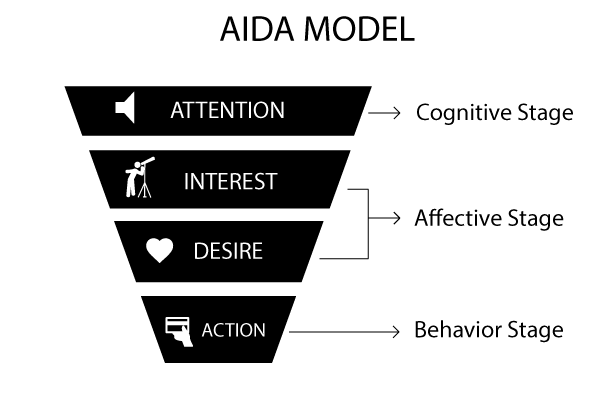

Tekstproduktion
Alle kan skrive en tekst, men det er ikke alle, der kan skrive gode tekster. Det kræver nemlig en række af evner, lige såvel som udformningen af realistiske tegninger gør. Webtekster adskiller sig også væsentligt fra almindelige tekster. I en fagbog gør det ikke noget, at der er lange og snørklede sætninger, men sådanne tekster hører sig ikke hjemme på et website. Webbets brugere er flyvske, og hvis de mødes af en mur af tekst, så er de tilbøjelige til at søge mod andre websites. Den uskrevne regel blandt tekstforfattere af online tekster er, at sætninger maksimalt må fylde 25 til 30 ord.
Webbrugere har et F-formet læsemønster, og derfor vil hele teksten heller ikke blive læst. F-formen koncentrerer sig om de første par linjer, mens brugeren i resten af teksten blot søger efter nøgleord. Brugere ønsker nemlig at bruge så lidt tid som muligt på at finde frem til det ønskede i en tekst.
Uanset medie skal den gode nyhed skrives ud fra de klassiske nyhedskriterier: væsentlighed, sensation, konflikt, identifikation og aktualitet. Jo flere af disse, der opfyldes i en tekst, jo større er sandsynligheden for, at teksten matcher målgruppen. Det kræver dog, at man kender målgruppen godt i forvejen – eller ved tekstskriveren ikke, hvem den skal henvende sig til.
Brugerne stiller også krav til afsenderen af teksten. Som man ser det blandt aviser, inddeler de deres stof i kategorier i form af redaktioner. Ligeledes skal webtekster gøre, så budskabet matcher afsenderen. Tekster kan derfor deles op i tre overordnede kategorier:
- Oplysning og information
- Debat
- Underholdning
Hvordan en tekst opfattes handler i bund og grund om graden af subjektivitet og objektivitet. Hvis brugeren læser et debatindlæg om en politisk holdning, som brugeren ikke deler, så er der risiko for, at teksten opfattes nærmest ironisk. Derfor kan tekster også opdeles på linje efter graden af subjektivitet og objektivitet, hvor kommentarer står som den mest subjektive teksttype og referater som den mest objektive.
Når man arbejder med tekster, er det også vigtigt at være kildekritisk. Hvis en tekstforfatter eksempelvis har læst noget uden en afsender, så kan dette ikke bruges som en kilde, da det ikke er muligt at vurdere, hvorvidt teksten er sand. Der er altså intet hold i den. En tekstforfatter må heller ikke bruge kilder, som tekstforfatteren har personlige relationer til, da det påvirker tekstforfatterens indtryk af kildens udtalelser. Sidst, men ikke mindst, er det svært at være kritisk overfor personer, man synes godt om, og derfor skal man også passe på med sådanne kilder, hvis teksten skal være objektiv.
Typiske genrer
Artikler
Artikler kan deles op i to kategorier: nyhedsartikler og subjektive artikler, og der stilles forskellige krav til de to. Nyhedsartiklen skal være opbygget efter nyhedstrekanten, hvilket vil sige, at det vigtigste i artiklen skal kunne trækkes ud af overskriften og introen. Dernæst kommer faktuelle oplysninger, så læseren ved, hvor nyheden har fundet sted, samt læseren for et lidt større indblik i, hvad der er sket. Til sidst kommer alle de understøttende detaljer, der kan være med til at give en dybere forståelse for, hvad der er sket, og hvorfor hændelsen er sket. Man starter altså ud med det opsigtsvækkende og slutte af med tungere tekst.
Den subjektive artikel er derimod opbygget efter kommodemodellen, og hvor nyhedsartiklen bør være objektiv, så vil en subjektiv være subjektiv, hvilket også ligger i begrebet. Med opbygning efter kommodemodellen menes der, at rammeværket (faktuelle oplysninger) skal stå først, og herefter er resten af teksten inddelt i ”skuffer”. Næste skuffe vil derfor være uddannelse og karriere efterfulgt af familieliv. Den subjektive artikel rummer derefter informationer om fritidsbeskæftigelser og til slut i artiklen skal der være en konklusion, der opsummerer alle informationerne.
Produkt- eller emneartikler
Produkt- og emneartikler er korte og adfærdsskabende eller -ændrende – call to action. Disse rummer ikke elementer af nyhedsværdi, og derfor bør de opbygges efter Hey-You-See-So-princippet. På ganske få ord skal de fange læserens opmærksomhed, rive læseren med ind i teksten, fortælle konsekvenserne eller goderne ved tekstens emne og til slut skal den medføre en handling. Teksterne skal derfor være velskrevne og overbevisende, og der må ikke være for mange ligegyldige fyldord.
Brochurer
Igen er der tale om en teksttype, der ikke har megen til udfoldelse, og derfor skal den være kort, præcis og opsættes nøje. Den skal opbygges på en sådan måde, at det vigtigste står forrest efterfulgt af mere og mere information. Som med alle andre teksttyper er det også vigtigt at kende sin målgruppe godt. Hvis brochuren eksempelvis skal reklamere for et nyt revisionsselskab, så dur det ikke, at have mange nymoderne ord i sin tekst.
Annoncer
Annoncer og AIDA-modellen går hånd i hånd. Der skal være så lidt tekst i en annonce som muligt, og der skal helst være noget grafik, der matcher den korte og præcise overskrift. AIDA er en sammentrækning af Attention, Interest, Desire og Action, og den minder om Hey-You-See-So princippet. Overskriften og billedet skal skabe opmærksomhed (Attention), og læserens interesse søges at vækkes (Interest). Læseren skal også overbevises om, at han eller hun er nødt til at have det, der reklameres for (Desire), og så skal læseren let kunne finde ud af, hvor han eller hun kan få fat i det, der reklameres for, så han eller hun kan købe det (Action).
Annoncer kan have fem vinkler:
- USP
- Unique Selling Proposition: et tilbud nu og her eller noget unikt
- ESP
- Emotional Selling Proposition: annoncen skal sælge på følelser hos modtageren
- ISP
- Ironic Selling Proposition: en ironisk tilgang og sort humor. Det kræver godt kendskab til målgruppen
- BSP
- Brand Selling Proposition: når brandet er større end produktet.
- OSP
- Organizational Selling Proposition: et brand, der opfattes som værende eksklusivt og noget særligt
Webtekster
Som tidligere nævnt skal webtekster være korte, præcise og uden fyldord, men ydermere kan webtekster inddeles i to kategorier: korttekster og heltekster. Korttekster fungerer som et link til langtekster, og de suppleres ofte med et billede, der sammen med overskriften og kortteksten skal fange brugerens opmærksomhed. Helteksten er den fulde artikel, og da webtekster læses anderledes end trykte tekster, bør den kun rumme ét emne. Det er vigtigt, at teksten lever op til resten af websitets tema, da brugeren ellers vil opleve forvirring.
Sociale medier
Der er stor forskel på webtekster generelt og tekster skrevet til de sociale medier, hvor indehaveren af et site hele tiden skal være i løbende dialog med de sociale mediers brugere. Det er vigtigt, at tekstforfatteren er yderst opmærksom på tonen i sin SoMe-tekst, da der ofte er under 100 at udtrykke sig på.